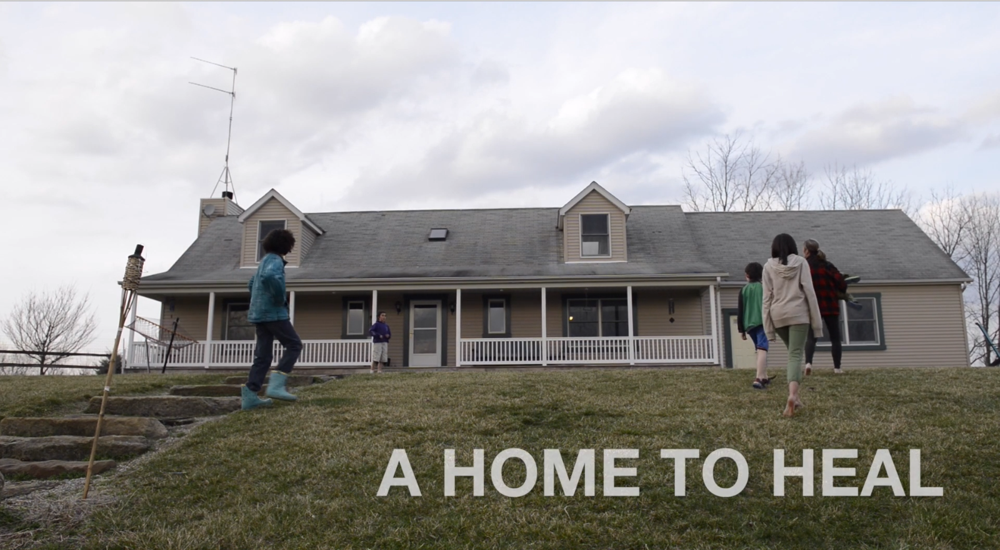
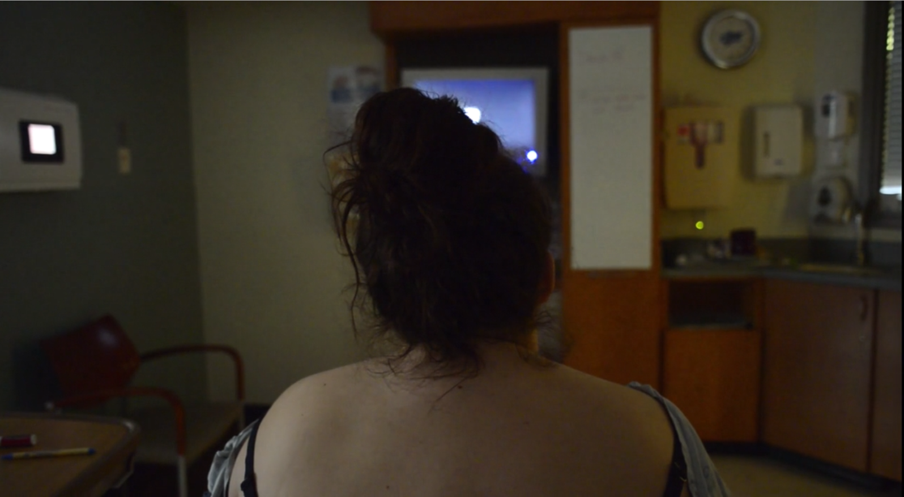
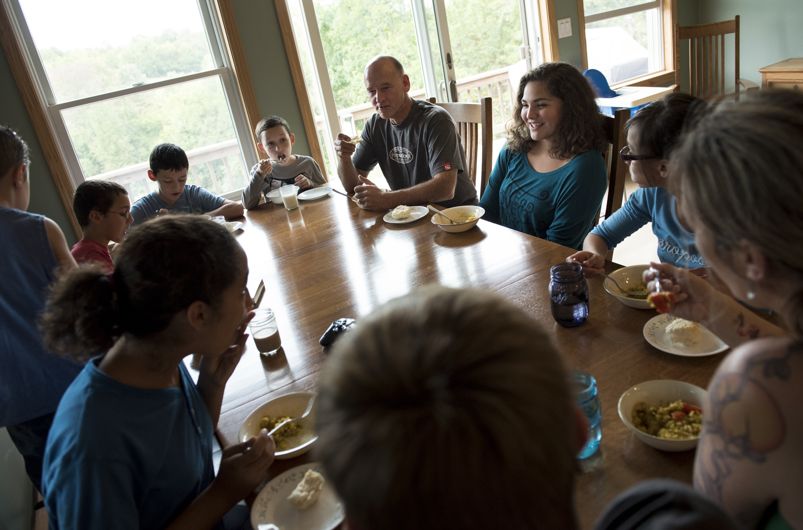

A multimedia storytelling project from WOUB Public Media
Stories

A Home To Heal
DJ and Lyle Fuller began adopting in 2007. Little did they know over time they would open their home to seven children who grew up in harsh family environments and the inexhaustible foster system. As a child of adoption herself, DJ creates a home where her children feel safe to talk openly about their past issues of abuse and neglect. Through teaching her children Trauma Release Exercise, or TRE, a series of exercises to help the body deal with past or present stressors, both DJ and her family come closer to accepting their pasts as a part of who they are.

Awaiting Axeton
A look into the fear that comes with pregnancy and the thoughts a young mother has as she goes into labor for the first time. A special thanks to Kristen Ray and her family.

Haydenville
Renowned as “The Last Company Owned Town in Ohio”, the community of Haydenville remains steeped in history not only through the rows of company houses that are still occupied, but also through the residents that perpetuate the legacy of the community as it once was.

Secrets of Southeast
When Jensen Caretti was about 5-years-old her mother said she would go outside to the driveway and place small piles of cat food around the basketball hoop to lure several of her families’ cats so she could practice dribbling around them.

Commonties
DJ and Lyle Fuller adopted their first child in 2007. Now, they have seven adopted children and one biological child. As an adopted child herself, DJ does all she can to create a home where her children feel safe to talk openly about their past and move closer to accepting it as part of they are.